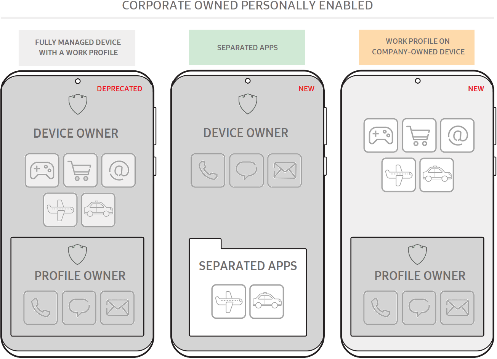
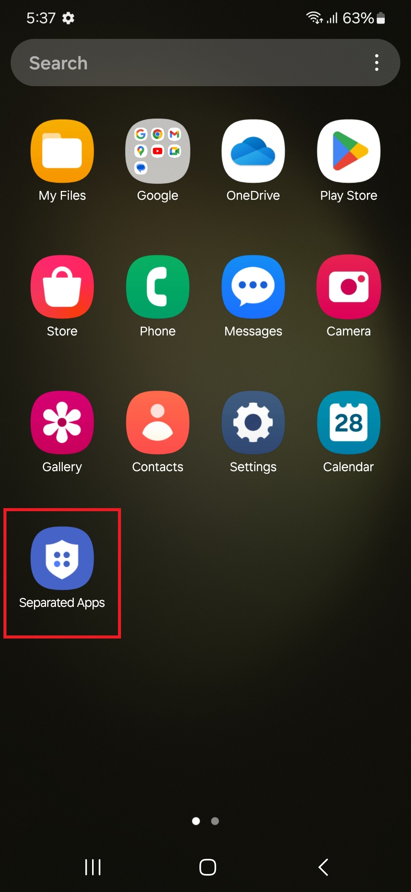
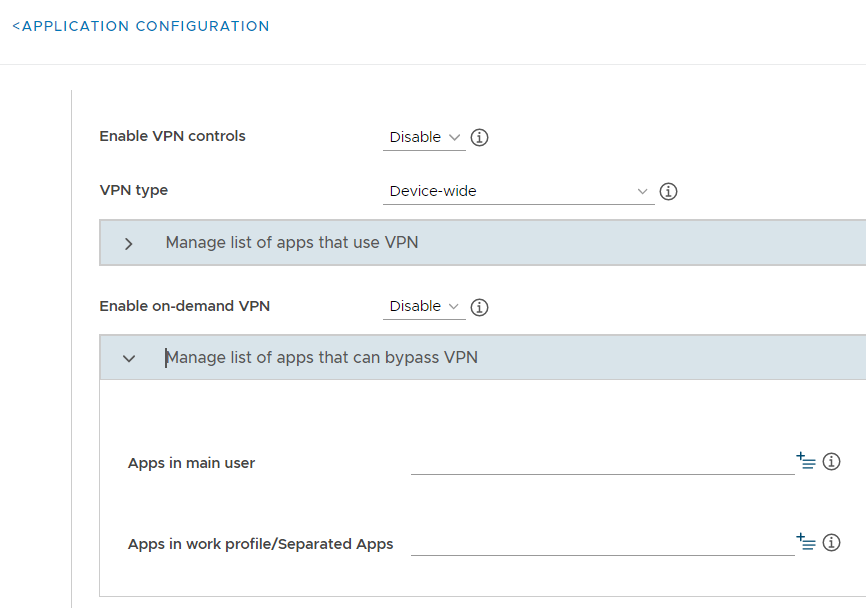

Separated Apps for Android 14
Last updated December 22nd, 2023
Enterprises that support work profiles on company-owned devices typically need to separate official work apps from third-party business apps installed by employees. For example,
- Airline apps (United, Delta, and so on)
- Hotel apps (Marriott, Hilton, and so on)
- Ride-sharing apps (Uber, Lyft, and so on)

An IT admin might not be comfortable with a third-party app that needs access to contacts, email addresses, or phone numbers, since sensitive work data may end up on third-party servers. In such a scenario, the enterprise is wholly responsible for its corporate assets and devices.
Therefore, the goal is to protect the privacy of personal activities on company devices, and provide IT admins with adequate control over the personal side of the device. For enterprises that still need full control over a device while enabling authorized third-party business apps, Samsung exclusively offers an additional option called Separated Apps. Separated Apps isolates third-party apps in a securely separated folder that prevents unauthorized access to confidential work data.
Separated Apps:
-
Allow you to create a folder inside Separated Apps.
-
Allow installing the same apps both inside and outside the Separated Apps folder.
-
Let you set Separated Apps policies with managed configurations.
How it works
Apps that you want to secure can be installed inside the Separated Apps folder:

By default, the following apps are available inside the Separated Apps folder, marked by a Separated Apps badge.
- Google Chrome
- Microsoft Office (depends on model)
- Samsung Calendar
- Samsung Camera
- Samsung Contacts
- Samsung Gallery
- Samsung MyFiles
- Samsung Video
An enterprise IT admin can:
- Use a UEM to install work apps on a fully managed device, for full access and control.
- Import Separated Apps from managed Google play in the UEM.
- Set up managed configurations for the installed work apps in Separated Apps. The remote configuration will be available on the UEM console.
The device user can:
- Set up an app shortcut on the device, to launch an app inside the Separated Apps folder.
- Configure the following settings inside the Separated Apps folder: apps, notifications, data usage, certificates, keyboard, and input.
Set up Separated Apps
-
In your UEM console, go to the managed Google Play store.
-
Search for Separated Apps > Managed configuration > Set configuration.
-
Set the following Separated Apps policies through managed configurations:
Policy Value Description Enable Separated Apps Enable Select Enable to use Separated Apps. Disable Select Disable to remove policies applied to Separated Apps from the device and all apps installed inside Separated Apps. Enable allowed apps installation policy Enable Select Enable to enable a policy configured in one of apps in the Separated Apps folder and whether the specified list of apps should be installed. Select Enable to either set or modify features. Disable Select Disable to remove the installation policies. Set location to install separated apps Inside If you select Inside, the list of specified apps will be installed inside the Separated Apps folder. Apps not included in this list will be installed outside the Separated Apps folder.
IMPORTANT — You can't change the installation location unless you disable Separate Apps.Outside If you select Outside, the list of specified apps will be installed outside the Separated Apps folder. Apps not added to this list will be installed inside the Separated Apps folder. Add allowed apps to be installed in separated location String(allowed package names) The specified list of apps should be installed outside or inside the Separated Apps folder. Provide a comma-separated list of applications that will be separated from all the other apps not in this list. Add allowed apps to be installed on both sides String(allowed package names) The specified list of apps will be installed in both the personal space and the Separated Apps folder simultaneously.
Manage Separated Apps
For devices running Android 14 or higher, IT admins can manage Separated Apps either through managed Google Play with managed configurations or Knox Service Plugin, depending on the following scenarios:
| Scenario | I want to manage Separated Apps with Knox Service Plugin | I want to manage Separated Apps with managed configurations |
|---|---|---|
| I want to use Separated Apps for my devices running Android 14 | IT admins who want to enable Separated Apps for the first time can use managed configurations instead of Knox Service Plugin. | Available with managed configurations that an IT admin can import. |
| I already use Separated Apps through Knox Service Plugin, and my devices were updated to Android 14 | The IT admin continues to manage Separated Apps policies through Knox Service Plugin, unless they enable Separated Apps with managed configurations. | Once Separated Apps is enabled with managed configurations, the new policies will override the existing Separated Apps policies enabled by Knox Service Plugin. NOTE — Managed configurations for Separated Apps hold higher priority than Knox Service Plugin policies. |
Third-party keyboards
Currently, this feature is available only through Knox Service Plugin.
Third-party keyboards are automatically installed both inside and outside of the Separate Apps folder, and are ignored by the Separated Apps app list.
Third-party keyboards have the following default behavior:
-
After Separated Apps is created:
-
All previously installed third-party keyboards are available both inside and outside of the Separated Apps folder.
-
Newly installed third-party keyboards are available in both locations.
-
-
If the device user uninstalls a third-party keyboard, it will be uninstalled from both inside and outside of the Separated Apps folder.
-
If you disable Separated Apps, all keyboards remain installed on the personal side of the device.
Access control policies
Currently, this feature is only available through Knox Service Plugin.
The following access control policies are applied to Separated Apps. These policies can’t be changed.
| Permitted (or supported) | Not permitted (or unsupported) |
|---|---|
| NFC | External SD card access |
| Screenshots (saved in a securely separate storage accessible only to the Separated Apps) | Bluetooth sharing |
| Copy & Paste between apps inside and outside the Separated Apps | |
| USB file transfer |
By default, managed Google Play is the only approved installer.
Backup policy
Currently, this feature is only available through Knox Service Plugin.
By default, backup is enabled for Separated Apps. If the device user disables backup for the entire device, backup for Separated Apps will similarly be disabled. If the device owner enables backup again, backup for Separated Apps will also be enabled.
VPN setup
Currently, all the following VPN setup options are only available through Knox Service Plugin.
When using Separated Apps, you can set up the following types of VPN configurations through Knox Service Plugin:
-
Full-device VPN: All apps on the device, both inside and outside the Separated Apps folder, use the same VPN tunnel.
-
Per-app VPN: The IT admin can configure a VPN tunnel for select apps.
-
Per-user VPN: The IT admin can configure a VPN tunnel for all apps inside or outside the Separated Apps folder.
-
VPN chaining: IT admin can configure two VPN tunnels to double-encrypt traffic.
See the following example screens for more information on how to set up these VPN configurations:
Full-device VPN

Per-app VPN

Per-user VPN

VPN chaining

VPN profile

On this page
Is this page helpful?